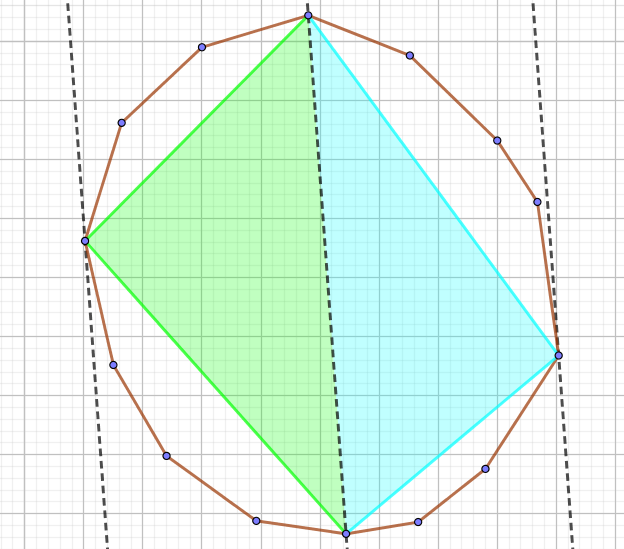
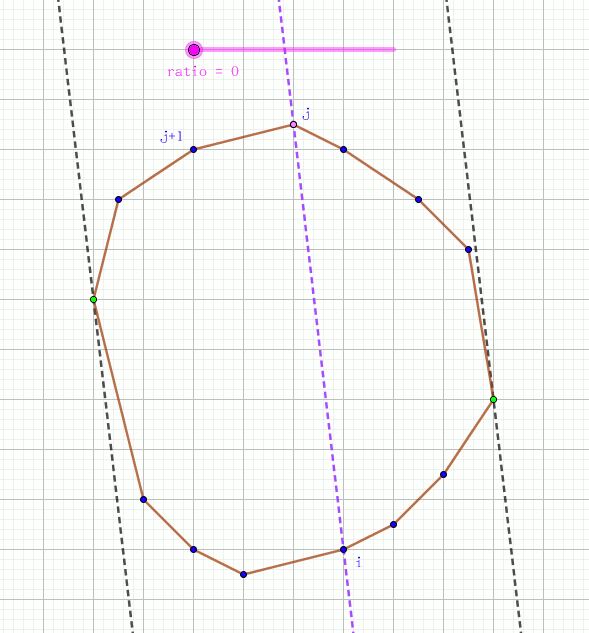

在某块平面土地上有 $N$ 个点，你可以选择其中的任意四个点，将这片土地围起来，当然，你希望这四个点围成的多边形面积最大。
第一行包含一个正整数 $N$ ($N \leq 2000$)，表示点的个数。
接下来 $N$ 行，每行两个实数 $x, y$ ($|x|, |y| \leq 10^5$)，表示该点的横坐标和纵坐标。
输出一行一个实数，表示最大的多边形面积，答案精确到小数点后 $3$ 位。
首先证明面积最大的四边形 $ABCD$ 的四个顶点，在这个 $N$ 个点组成的凸包边界上。
若不然，如果有一点 $A$ 不在凸包边界上，那么可以延长 $CB, CD$ 交原点集的凸包 (边界)，则所得的四边形面积更大。
于是先 (用 Graham 算法) 求出该点集的凸包。然后只需在这个凸多边形中寻找面积最大的内接四边形。
先考虑暴力，首先是暴力枚举四个点，那么时间复杂度为 $O(n^4)$，不可接受。
然后可以发现，这样做了太多的冗余计算。因为如果我们固定了一条对角线后，就是寻找两个三角形。我们只需要解决两个独立的子问题——寻找一个点，使得与已知两点构成的三角形的面积尽可能大，如下图：
这样复杂度就从 $O(n^4)$ 降到了 $O(n^3)$，但这还不足以过掉 $n = 2000$ 的数据。
我们考虑当固定 (第一个点) $i$，枚举 ($i$ 的对角线的另一点) $j$ 时，这两个点都要每次从头 $i$ 枚举到 $j$ 呢？
记我们在子问题中所寻找的两个点为 $u, v$。由于它们分别和 $i, j$ 组成的三角形面积要最大，可得，它们要和过 $i, j$ 的直线 (下文记作 $l$) 最远。也就是说，过点 $u$ (或 $v$) 作 $l$ 的平行线，所得直线 $l'$ 是凸多边形的 "切线" (从图中亦可以看出)。
假设 $i$ 为极点，考虑沿多边形枚举 $j$ 的时候，由凸多边形的性质，$j$ 的极角是单调递增的，也就是说，$l$ 的倾斜角是单调递增的。那么，我们所需的 "切线" 的倾斜角也是单调递增的，由多边形的凸性，我们可以得到，$u, v$ 两个点 (的顺序) 是单调的，见下图：
可以看出，这个过程就像一对平行线 (筷子) 夹着凸多边形转，这就是旋转卡壳 (xuán zhuǎn qiǎ ké) 算法。
对于一个固定的 $i$，$u, v$ 两个点至多变换 $n$ 次 (走一圈)，因此总时间复杂度为 $O(n^2)$，这就可以过了。
#include <bits/stdc++.h>
#define N 2034
using namespace std;
const double eps = 1e-8;
struct vec2{
double x, y;
vec2 (double x0 = 0.0, double y0 = 0.0): x(x0), y(y0) {}
vec2 * read() {scanf("%lf%lf", &x, &y); return this;}
// inline vec2 operator + (const vec2 &B) const {return vec2(x + B.x, y + B.y);}
inline vec2 operator - (const vec2 &B) const {return vec2(x - B.x, y - B.y);}
// inline vec2 operator * (double k) const {return vec2(x * k, y * k);}
inline double operator * (const vec2 &B) const {return x * B.x + y * B.y;}
inline double operator ^ (const vec2 &B) const {return x * B.y - y * B.x;}
inline double norm2() const {return *this * *this;}
}p[N], *st[N];
int n, i, top;
double ans = 0.0;
inline int next(int x, const int y = 1) {return (x += y) >= top ? x - top : x;}
inline void up(double &x, const double y) {x < y ? x = y : 0;}
inline double area(int i, int j, int k) {return *st[j] - *st[i] ^ *st[k] - *st[i];}
inline bool cmp1(const vec2 &A, const vec2 &B){
return A.x < B.x - eps || A.x < B.x + eps && A.y < B.y - eps;
}
inline bool cmp2(const vec2 &A, const vec2 &B){
double p = A ^ B;
return p > eps || p > -eps && A.norm2() < B.norm2() - eps;
}
void graham(){
int i = min_element(p, p + n, cmp1) - p;
swap(p[0], p[i]);
for(i = 1; i < n; ++i) p[i] = p[i] - p[0]; p[0] = vec2();
sort(p + 1, p + n, cmp2);
st[0] = p; st[1] = p + 1; st[2] = p + 2; top = 3;
for(i = 3; i < n; ++i){
for(; (p[i] - *st[top - 2] ^ *st[top - 1] - *st[top - 2]) > -eps; --top);
st[top++] = p + i;
}
st[top++] = p;
}
void rotating_calipers(){
int i, j, u, v;
for(i = 0; i < top - 2; ++i){
u = i + 1; v = next(u, 2);
for(j = i + 2; j < top; ++j){
for(; next(u) != j && area(i, u, j) < area(i, next(u), j); u = next(u));
for(; next(v) != i && area(j, v, i) < area(j, next(v), i); v = next(v));
up(ans, area(i, u, j) + area(j, v, i));
}
}
}
int main(){
scanf("%d", &n);
for(i = 0; i < n; ++i) p[i].read();
graham();
rotating_calipers();
printf("%.3lf\n", ans * 0.5);
return 0;
}
坑1：在求点 $u, v$ 的时候，要注意求出的面积是有向的，应该合理选择点的顺序再比较。